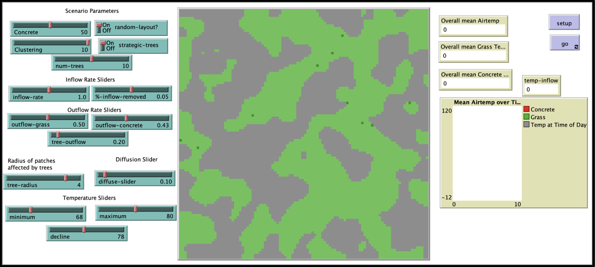
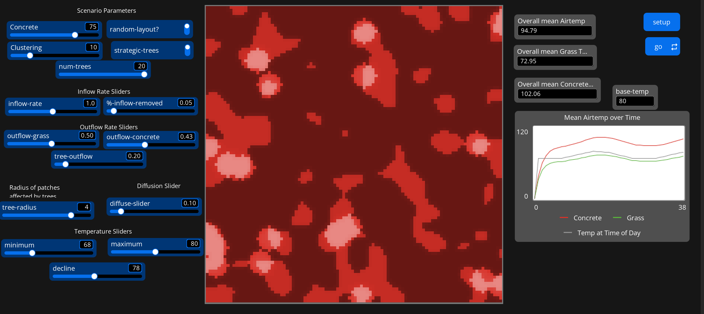
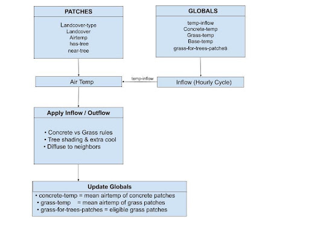
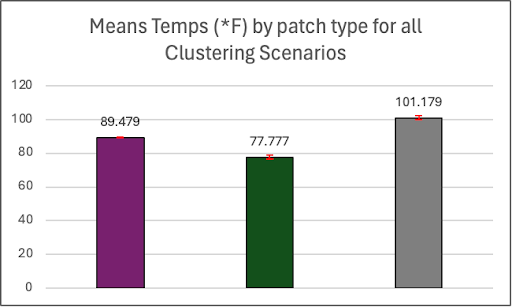

Policy Brief · Agent-Based Modeling
Using agent-based modeling to explore how land cover quantity and spatial arrangement drive heat patterns in urban environments, and what that means for city planning and resilience.
Background
Urban heat islands (UHIs) are one of the most well-documented consequences of urbanization. Cities are systematically warmer than surrounding rural areas, sometimes by more than 10 degrees Fahrenheit, because of the concentration of heat-absorbing surfaces like concrete and asphalt, the loss of tree cover and vegetation, and the dense geometry of buildings that traps heat and blocks wind.
The consequences are serious. Extreme urban heat contributes to heat exhaustion, respiratory distress, and preventable death, disproportionately affecting communities including elderly residents, children, and low-income communities that lack air conditioning and green space. Urban heat also creates a damaging feedback loop: higher temperatures drive greater air conditioning use, which increases energy consumption and emissions that further warm the environment.
Understanding how to reduce urban heat requires understanding not just what materials a city is made of, but how those materials are arranged relative to each other. That spatial dimension is difficult and expensive to measure in the real world, which is where simulation becomes a useful tool for planners and policymakers.
Research Question: How do different spatial distributions and quantities of land cover types affect heat interactions in an urban environment?
Model Design
We built an agent-based model in NetLogo that simulates a simplified urban environment. The model contains two land cover types, concrete and grass, and tree agents that can be placed strategically or randomly across grass patches. Each patch has a temperature that updates every tick (representing one hour), driven by heat inflow from a simulated daily temperature curve, outflow rates that vary by land cover, and diffusion to neighboring patches.
The model was calibrated against empirical research on surface temperatures. Concrete patches run significantly hotter than peak air temperature; grass patches run slightly cooler; and patches within a tree's shading radius receive reduced inflow and amplified cooling. This allowed us to test how changing quantities, arrangements, and tree placements affected mean temperatures across the full model environment.


Note: this screenshot was captured in a later version of NetLogo, which uses a different interface layout than the version used to run the original analysis. The underlying model logic and results are unchanged.

Key Findings
Scenario testing covered four variables: concrete quantity, tree count, tree radius, and land cover clustering. The results confirmed expected findings on quantity and tree cover. More concrete means higher temperatures; more trees means lower temperatures. The most policy-relevant finding, however, came from the clustering scenarios.
| Clustering Level | Overall Mean Temp | Grass Mean | Concrete Mean |
|---|---|---|---|
| 0 (fully mixed) | 89.4°F | 79.3°F | 99.5°F |
| 5 (moderate) | 89.5°F | 77.1°F | 101.9°F |
| 10 (highly clustered) | 89.6°F | 76.9°F | 102.2°F |
When concrete and grass are fully interleaved, concrete temperatures are meaningfully lower than when the two land covers are segregated into separate zones. The cooling effect of nearby grass patches extends into adjacent concrete through heat diffusion, an effect that disappears when the two materials are separated. The overall mean temperature changes little, but the concrete surface temperature, the primary driver of dangerous urban heat, drops by several degrees when land covers are mixed.

Policy Implications
The simulation suggests that land cover configuration matters as much as quantity, and potentially more than the simple addition of green space in isolated patches. Two recommendations follow directly from the findings:
Integrate vegetation into existing paved infrastructure rather than concentrating it in isolated green zones. The clustering findings suggest that grass and trees dispersed throughout a neighborhood, including planting strips, median greenery, and roadside plantings, are more effective at reducing dangerous surface temperatures than equivalent vegetation concentrated in a park or plaza. In Boston, this points to opportunities along transit corridors: sections of the Green Line that run between surface lanes could follow the European streetcar model of grass-lined tracks, introducing vegetation directly into a high-heat corridor.
Use stormwater management investment as a heat mitigation tool. Effective stormwater management often involves replacing impervious surface with permeable materials and plantings such as bioswales, rain gardens, and permeable pavement strips. These interventions directly reduce concrete coverage while dispersing vegetation throughout the urban fabric in precisely the interleaved pattern the model identifies as most effective for heat reduction. Cities and towns applying for stormwater infrastructure funding should be encouraged to consider co-benefits for urban heat resilience in their project designs.
Limitations & Next Steps
The model simplifies the urban environment considerably. It excludes building height and geometry, vehicular heat, air conditioning exhaust, and the behavioral responses of residents to extreme heat, all of which matter in real cities. The strategic tree placement mechanism also limited how much shading reached concrete patches directly, which likely understated the cooling effect of well-positioned trees on high-heat surfaces.
Future extensions could incorporate social behavior by modeling how residents respond to extreme heat events, and allow dynamic tree growth to simulate long-term canopy development. The model's generalizable temperature parameters also make it adaptable to other cities and climates, opening possibilities for comparative analysis across different urban contexts.